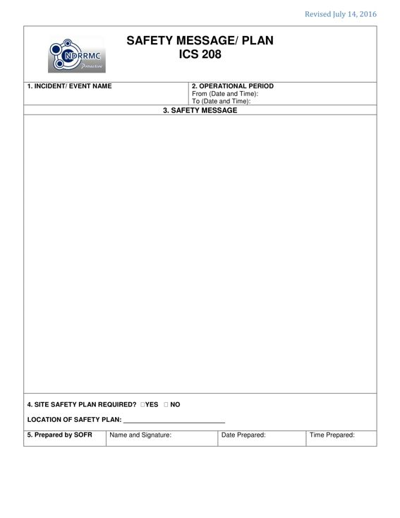

PURPOSE: The ICS 208 expands on the Safety Message and Site Safety Plan.
PREPARATION: The ICS 208 is an optional form that may be included and completed by the Safety Officer (SOFR) for the Incident Action Plan (IAP).
DISTRIBUTION: The ICS 208, if developed, is duplicated and attached to the ICS 202 and given to all recipients as part of the Incident Action Plan (IAP). All completed original forms must be given to the Documentation Unit.

BLOCK NO. |
BLOCK TITLE |
INSTRUCTIONS |
| 1 | Incident / Event Name | Enter the name assigned to the incident / event. |
| 2 | Operational Period | Enter the start date (mm-dd-yyyy) and time (24 hour format) and end date and time for the operational period to which the form applies. |
| 3 | Safety Message | Enter clear, concise statements for safety message(s), priorities, and key command emphasis/decisions/directions. Enter information such as known safety hazards and specific precautions to be observed. If needed, additional safety message(s) should be prepared. |
| 4 | Site Safety Plan Required? | Enter whether or not a site safety plan (safety plan of the infrastructure of the facility or the work area) is required. If yes, specify where the safety plan can be obtained. |
| 5 | Prepared by SOFR | Enter complete name of the SOFR, signature, date (mm-dd-yyyy), and time (24 hour format) the form was prepared and completed. |